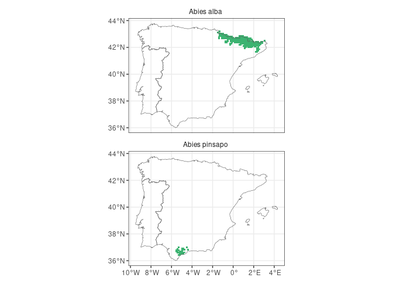

FloraIberica R package facilitates access to taxonomic and distribution data for the c. 6500 vascular plants present in the Iberian Peninsula and Balearic Islands, based on the AFLIBER database. This atlas provides the distribution of each taxon in a 10 x 10 km UTM grid.
Installation
remotes::install_github("Pakillo/FloraIberica")Usage
Checking if taxa are present in the Iberian Peninsula and/or Balearic Islands
is_present(genus = "Laurus", species = c("nobilis", "azorica"))
#> Laurus nobilis Laurus azorica
#> TRUE FALSEChecking if taxa are endemic
is_endemic(genus = "Aconitum", species = "napellus",
subspecies = c("castellanum", "lusitanicum"))
#> Aconitum napellus castellanum Aconitum napellus lusitanicum
#> TRUE FALSEGetting the distribution of plant taxa
Returns sf or dataframe with the coordinates of the centre of 10 x 10 km UTM grid cells where taxa are present:
get_distribution("Abies", "pinsapo")
#> Simple feature collection with 30 features and 4 fields
#> Geometry type: POINT
#> Dimension: XY
#> Bounding box: xmin: -5.522 ymin: 36.438 xmax: -4.401 ymax: 36.991
#> Geodetic CRS: WGS 84
#> First 10 features:
#> Genus Species Subspecies UTM.cell geometry
#> 213 Abies pinsapo <NA> 30STF76 POINT (-5.519 36.704)
#> 214 Abies pinsapo <NA> 30STF77 POINT (-5.522 36.794)
#> 215 Abies pinsapo <NA> 30STF85 POINT (-5.404 36.616)
#> 216 Abies pinsapo <NA> 30STF86 POINT (-5.407 36.706)
#> 217 Abies pinsapo <NA> 30STF87 POINT (-5.41 36.796)
#> 218 Abies pinsapo <NA> 30STF88 POINT (-5.413 36.887)
#> 219 Abies pinsapo <NA> 30STF93 POINT (-5.287 36.438)
#> 220 Abies pinsapo <NA> 30STF95 POINT (-5.292 36.619)
#> 221 Abies pinsapo <NA> 30STF97 POINT (-5.298 36.799)
#> 222 Abies pinsapo <NA> 30STF99 POINT (-5.303 36.979)Making distribution maps

Many taxa
Distribution of Iberian Abies:
abies <- get_distribution("Abies")
map_distribution(abies)You can also get one map per taxon (species):
map_distribution(abies, facet = TRUE, ncol = 1)
Or collapse all presences of the entire genus:
map_distribution(abies, taxo.level = "genus", size = 0.9)Another example with Iberian Pines:
pinus <- get_distribution("Pinus")
library(ggplot2)
map_distribution(pinus, facet = TRUE, ncol = 2) +
theme(axis.text = element_text(size = 6))
Get a checklist of the plants present near a point or polygon
If you want to know the plants near a given site, just pass the coordinates to get_checklist:
site <- c(-5, 40)
head(get_checklist(site))
#> Genus Species Subspecies
#> 1 Acer monspessulanum monspessulanum
#> 2 Adenocarpus aureus <NA>
#> 4 Adenocarpus complicatus <NA>
#> 5 Allium scorzonerifolium <NA>
#> 6 Alnus glutinosa <NA>
#> 7 Alyssum fastigiatum <NA>The site can be a polygon, so you can easily obtain a list of the plants present within a given area (e.g. town, province, natural reserve):
cadiz <- mapSpain::esp_get_prov_siane("Cadiz", epsg = "4326")
head(get_checklist(cadiz))
#> Genus Species Subspecies
#> 1 Abies pinsapo <NA>
#> 11 Acer monspessulanum monspessulanum
#> 21 Acer opalus granatense
#> 22 Aceras anthropophorum <NA>
#> 33 Achillea ageratum <NA>
#> 57 Achillea odorata <NA>You can also obtain an sf object rather than a dataframe, so you know where each plant occurs within or near that polygon (with a resolution of 10x10 km inherited from the AFLIBER database):
cadiz.qpyr <- get_checklist(cadiz, sf = TRUE) |>
dplyr::filter(Genus == "Quercus", Species == "pyrenaica")
ggplot() +
geom_sf(data = cadiz) +
geom_sf(data = cadiz.qpyr) +
theme_bw()
Citation
citation("FloraIberica")
If you use FloraIberica, please cite both the data source and the
package as:
Ramos-Gutiérrez I., Lima H., Pajarón S., Romero-Zarco C., Sáez L.,
Pataro L., Molina-Venegas R., Rodríguez M. Á. & Moreno-Saiz J. C.
(2021). Atlas of the vascular flora of the Iberian Peninsula
biodiversity hotspot (AFLIBER). Global Ecology and Biogeography, 30,
1951– 1957. https://doi.org/10.1111/geb.13363
Rodríguez-Sánchez Francisco. 2023. FloraIberica: Taxonomic and
distribution data for the vascular plants of the Iberian Peninsula
and Balearic Islands. https://pakillo.github.io/FloraIberica
To see these entries in BibTeX format, use 'print(<citation>,
bibtex=TRUE)', 'toBibtex(.)', or set
'options(citation.bibtex.max=999)'.